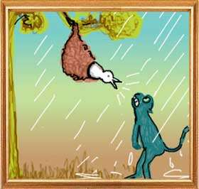

A pair of sparrows made their home on a branch of a big tree and lived happily there.Soon it was winter and it began to rain heavily. Frequent gusts of wind made the cold unbearable. At this time, a monkey completely drenched in the rain and shivering from cold, came scurrying to the tree for cover.
Seeing the condition of the monkey, the female sparrow said, “Gentleman, with your feet and hands you seem to be a human being. Why didn't you build a house for yourself?' Angered by this uncalled for advice, the monkey said, “you stupid, why do not you shut up and mind your business?' The monkey told himself, “My, what impudence! This bit of a creature has the cheek to offer me advice. Makes fun of me. Unnecessary prattle. I must teach her a lesson. Why shouldn't I kill her?”
Turning to the female, the monkey said, “How does it help you to worry about my plight? Haven't you heard this saying of the elders that you should offer advice to those who seek it and cherish it? Advice to him who is indifferent is like a cry in the wilderness. Don't try to do that.”
When the female persisted, the monkey climbed up the tree and broke up the nest of the sparrow pair.